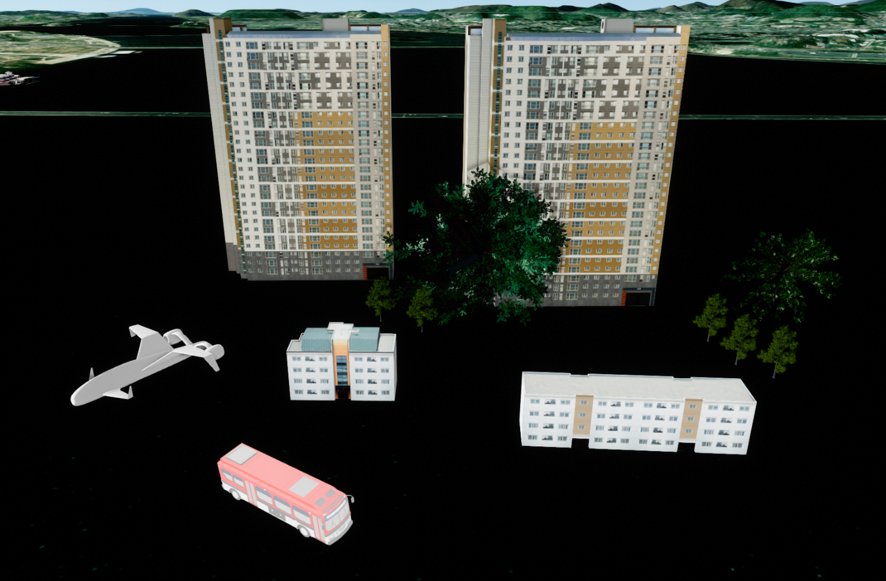

컴포넌트 생성하기
목차
컴포넌트의 개념 및 구성은 용어 설명 - 컴포넌트를 참고하세요.
이 장에서는 GeOnDT가 3D 에셋을 어떻게 인식하고, 이를 3D 공간에 출력되는 컴포넌트로 생성하는지 다룹니다.

1. 레이어 생성하기
컴포넌트 레이어는 등록된 3D 에셋 정보를 통해 GeOnDT에서 사용할 수 있는 데이터로 변환하고, 컴포넌트를 생성하고, 생성된 컴포넌트를 출력·조회·관리합니다.
GeOnDT에서 주로 사용되는 대표적인 컴포넌트 레이어는 U3dMultipleComponentLayer 입니다.
1. createMultipleComponentLayer()로 생성
API
U3dApp.createMultipleComponentLayer(opt) : app에 컴포넌트 레이어를 생성하고 등록하는 함수
매개변수
opt(object) : 레이어 생성 옵션. 필수opt.name(string) : 레이어 이름. 필수opt.needxml(boolean) : XML 사용 여부. 준비된 XML이 없으면falseopt.rotation(Vector3) : 레이어 전체에 적용할 회전값opt.scale(Vector3) : 레이어 전체에 적용할 크기값opt.listmodel(ModelDataInfo[]) : 레이어를 생성할 때 함께 등록할 3D 에셋 정보 목록opt.setInstanced(boolean) : 대량 배치 방식 사용 여부. 기본값:true
반환값
return(U3dMultipleComponentLayer | false) : 생성된 레이어. 옵션이 올바르지 않으면false
const layer = app.createMultipleComponentLayer({
name: 'ComponentLayer',
needxml: false
});
if (!layer) {
throw new Error('컴포넌트 레이어 생성에 실패했습니다.');
}
await layer;
app.showLayer(layer.getName(), true);
2. 생성자 함수로 직접 생성
new GeOnDT.model.U3dMultipleComponentLayer()로도 레이어 객체를 생성할 수 있습니다.
생성자 함수로 직접 생성할 때는 반드시 app.addLayer() 메서드를 통해 수동으로 app에 레이어를 등록해야 합니다.
const layer = new GeOnDT.model.U3dMultipleComponentLayer({
name: 'ComponentLayer',
needxml: false
});
app.addLayer(layer);
await layer;
app.showLayer(layer.getName(), true);
특별히 직접 생성해야 할 이유가 없다면 레이어 생성과 app 등록을 함께 처리하는 createMultipleComponentLayer() 사용을 권장합니다.
생성된 레이어는 반드시 app.showLayer 메서드로 가시화 여부를 true로 설정해야 화면에 출력됩니다.
2. 데이터 등록하기
컴포넌트를 생성하려면 원본 3D 에셋 정보를 레이어에 등록해야 합니다.
각 에셋은 ModelDataInfo 객체로 정보를 전달하며, 다음과 같은 정보를 포함합니다.
name(string) : 3D 에셋을 구분하는 고유한 이름 (사용자 지정 값)baseurl(string) : 3D 에셋 파일이 위치한 기본 URL 경로. 마지막/까지 입력fileName(string) : 확장자를 포함한 원본 파일명 (예:building.glb)ext(string) : 3D 에셋 파일 형식 (예:3ds,obj,glb,fbx)
fileName의 확장자와 ext는 일치해야 합니다.baseurl과 fileName을 연결한 주소에 실제 파일이 존재하는지도 확인합니다.name은 이후 3D 에셋을 구분하는 고유한 키 값으로 사용되므로 중복되지 않게 지정합니다.
에셋 데이터는 다음 두 방법으로 컴포넌트 레이어에 등록할 수 있습니다.
- 레이어를 생성할 때
listmodel옵션으로 한 번에 등록 - 레이어를 생성한 뒤
loadModel()로 동적으로 등록
1. listmodel로 한 번에 등록
listmodel은 여러 ModelDataInfo 객체를 받는 배열입니다. 레이어 생성과 동시에 사용할 에셋이 정해져 있을 때 적합합니다.
const layer = app.createMultipleComponentLayer({
name: 'ComponentLayer',
needxml: false,
listmodel: [
{
name: 'building',
baseurl: 'component/building/',
fileName: 'building.glb',
ext: 'glb'
},
{
name: 'tree',
baseurl: 'component/tree/',
fileName: 'tree.fbx',
ext: 'fbx'
}
]
});
if (!layer) {
throw new Error('컴포넌트 레이어 생성에 실패했습니다.');
}
await layer;
2. loadModel()로 동적 등록
레이어 생성 시점과 3D 에셋 데이터를 읽어오는 시점이 다르거나,
실행 중에 필요한 에셋만 동적으로 추가하려면 loadModel()을 통해 등록 가능합니다.loadModel()의 매개변수는 앞서 설명한 ModelDataInfo 객체입니다.
API
U3dMultipleComponentLayer.loadModel(modelDataInfo) : 3D 에셋을 레이어에 등록하는 함수
매개변수
modelDataInfo(ModelDataInfo) : 등록할 3D 에셋 정보. 필수modelDataInfo.name(string) : 3D 에셋 이름. 필수modelDataInfo.baseurl(string) : 에셋 파일이 위치한 기본 URL 경로. 필수modelDataInfo.fileName(string) : 확장자를 포함한 원본 파일명. 필수modelDataInfo.ext(string) : 3D 에셋 파일 형식. 필수
반환값
return(Promise<void>) : 에셋 로드가 끝나면 완료되는 Promise
const layer = app.createMultipleComponentLayer({
name: 'ComponentLayer',
needxml: false,
listmodel: []
});
if (!layer) {
throw new Error('컴포넌트 레이어 생성에 실패했습니다.');
}
await layer;
await layer.loadModel({
name: 'helicopter2',
baseurl: 'component/drone/Drone_02/',
fileName: 'Drone_02.3ds',
ext: '3ds'
});
반드시 listmodel 또는 loadModel()의 비동기 로드가 완료된 뒤 해당 에셋으로 컴포넌트를 생성해야 합니다.
3. 컴포넌트 생성하기
에셋 등록이 완료되면 addPosition()으로 원하는 위치에 컴포넌트를 생성합니다.object에는 앞에서 지정한 ModelDataInfo.name을 입력합니다.
GeOnDT에서 컴포넌트는 U3dComponentPosition / U3dComponentInstancedPosition 클래스로 정의됩니다.
API
U3dMultipleComponentLayer.addPosition(opt) : 등록된 3D 에셋으로 컴포넌트를 생성하고 레이어에 추가하는 함수
매개변수
opt(object) : 컴포넌트 생성 옵션. 필수opt.name(string) : 레이어 안에서 컴포넌트를 조회할 때 사용하는 고유한 이름. 필수opt.object(string) : 미리 등록한 3D 에셋 이름. 필수opt.position(Vector3) : 월드 좌표(EPSG:3857).geoPosition과 둘 중 하나를 입력opt.geoPosition(Vector3) : 위도·경도 좌표.position과 둘 중 하나를 입력opt.rotation(Vector3) : 컴포넌트 회전값(라디안)opt.scale(Vector3) : 컴포넌트 크기값opt.visible(boolean) : 컴포넌트 표시 여부opt.labelVisible(boolean) : 라벨 표시 여부opt.properties(object) : 컴포넌트에 저장할 사용자 속성opt.style(object) : 생성할 때 적용할 스타일
반환값
return(U3dComponentPosition | U3dComponentInstancedPosition | undefined) : 생성된 컴포넌트. 실패하면undefined
1. 위도·경도 좌표 (EPSG:4326)로 생성
const placedObject = layer.addPosition({
name: 'helicopter-1',
object: 'helicopter2',
geoPosition: {x: 126.62241, y: 37.55637, z: 16},
rotation: {x: 0, y: 0, z: 0},
scale: {x: 1, y: 1, z: 1}
});
if (!placedObject) {
throw new Error('컴포넌트 생성에 실패했습니다.');
}
2. 월드 좌표 (EPSG:3857)로 생성
const placedObject = layer.addPosition({
name: 'helicopter-2',
object: 'helicopter2',
position: {x: 14129044, y: 4511042, z: 16},
rotation: {x: 0, y: 0, z: 0},
scale: {x: 1, y: 1, z: 1}
});
if (!placedObject) {
throw new Error('컴포넌트 생성에 실패했습니다.');
}
position과 geoPosition을 동시에 입력하지 말고 좌표 체계에 맞는 값 하나만 사용합니다.
4. 컴포넌트 생성 방식 설정하기
컴포넌트는 일반 방식 또는 대량 배치 방식으로 생성할 수 있습니다.
일반 방식은 각 컴포넌트의 위치나 크기, 회전 값을 빈번하게 수정하거나, 개별적으로 제어 해야할 애니메이션이나 특성 정보가 있는 경우 적합합니다.
대량 배치 방식은 같은 3D 에셋을 공유하는 컴포넌트를 수만 ~ 수십만개 씩 대량/대규모로 출력할 때 적합합니다.
일반 방식으로 생성 시 사용되는 클래스는 U3dComponentPosition입니다.
대량 배치 방식으로 생성 시 사용되는 클래스는 U3dComponentInstancedPosition입니다.
일반적으로 각각 다른 3D 에셋을 사용하거나, 개별적인 제어가 필요한 경우는 일반 방식을 사용하는 것을 권장합니다.
예를 들어 계속해서 움직이고 개별적인 3D 에셋을 사용하는 사람이나 비행기 같은것은 일반 방식으로, 숲의 나무나 가로등 같이 정적이고 대규모로 출력되야하는 컴포넌트는 대량 배치 방식을 사용하는 것이 좋습니다.
방식을 설정하는 방법은 두가지가 있습니다.
레이어 생성 시 옵션(setInstanced)으로 설정하거나 layer.setInstanced(true|false) 메서드로 설정할수 있습니다.
1. 레이어 생성 옵션으로 설정
const layer = app.createMultipleComponentLayer({
name: 'ComponentLayer',
needxml: false,
setInstanced: false
});
2. setInstanced()로 설정
API
U3dMultipleComponentLayer.setInstanced(isInstanced) : 이후 생성할 컴포넌트의 생성 방식을 설정하는 함수
매개변수
isInstanced(boolean) :true이면 대량 배치 방식,false이면 일반 방식. 필수
layer.setInstanced(false);
// 일반 방식으로 생성
const placedObject = layer.addPosition({
name: 'helicopter-1',
object: 'helicopter2',
geoPosition: {x: 126.62241, y: 37.55637, z: 16}
});
layer.setInstanced(true);
// 대량 배치 방식으로 생성
const placedObject = layer.addPosition({
name: 'helicopter-1',
object: 'helicopter2',
geoPosition: {x: 126.62241, y: 37.55637, z: 16}
});
현재 설정을 확인하려면 isInstanced()를 사용합니다.
API
U3dMultipleComponentLayer.isInstanced() : 현재 설정된 컴포넌트 생성 방식을 확인하는 함수
반환값
return(boolean) : 대량 배치 방식이면true, 일반 방식이면false
setInstanced()는 이미 생성된 컴포넌트의 방식을 변환하지 않습니다. 호출 이후 addPosition()으로 생성하는 컴포넌트에만 적용됩니다.